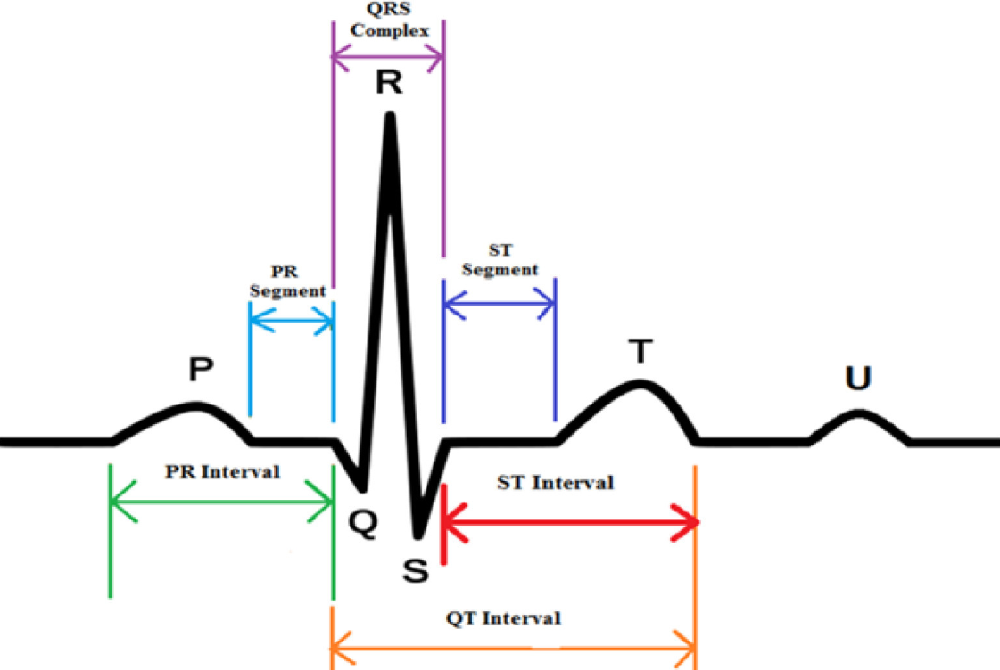

Identification and Determination of Different Wave Components in ECG Signals
Introduction
The Electrocardiogram (ECG) is a non-invasive biomedical signal that records the electrical activity of the heart over time. It is obtained by placing electrodes on the body surface, which capture voltage changes produced during cardiac depolarization and repolarization. The ECG waveform consists of characteristic components such as the P wave, QRS complex, and T wave, each corresponding to specific electrical events within the heart. A clean and properly recorded ECG signal plays an important role in the clinical analysis and diagnosis of cardiac conditions, as it provides critical information related to heart rhythm, conduction pathways, and overall cardiac function.
Purpose of Identifying Individual ECG Wave Components
Each component of the ECG waveform (P, Q, R, S, and T) corresponds to a specific physiological event occurring during the cardiac cycle. Correct identification of these wave components is essential because it helps in understanding how the electrical impulse travels through different regions of the heart and whether the heart is functioning normally.
- P wave: Represents atrial depolarization, which is the electrical activation of the upper chambers of the heart (atria).
- QRS complex: Represents ventricular depolarization, which is the electrical activation of the lower chambers (ventricles). It is the most prominent part of the ECG due to its high amplitude and rapid slope.
- T wave: Represents ventricular repolarization, which is the recovery phase of the ventricles after contraction and pumping of blood.

Identifying and measuring these components helps clinicians determine whether the heart rhythm and conduction system are normal or if any abnormalities are present. For example, the duration of the QRS complex and the time intervals between waves can indicate conduction delays or possible ischemic damage. A prolonged or widened QRS complex may suggest that the electrical signal is moving slowly inside the heart, while changes in the timing and spacing between waves can reflect underlying heart-related disorders that require further medical evaluation.
ECG Leads and Selection of Lead II
This study focuses on identifying key ECG wave components using Lead II of the standard 12-lead ECG configuration. Lead II is widely used because it aligns closely with the heart’s electrical axis, making the P wave and QRS complex more prominent and easier to detect than in many other leads. Analysis of Lead II provides clear and reliable measurements for waveform timing and amplitude, making it highly suitable for rhythm interpretation and component identification.
Standard Limb Leads (I, II, III)
The standard ECG system uses three bipolar limb leads—Lead I, Lead II, and Lead III—to record the heart’s electrical activity in the frontal plane. These leads are formed by placing electrodes on the right arm (RA), left arm (LA), and left leg (LL).
- Lead I: Measures the voltage difference between LA (+) and RA (−).
- Lead II: Measures the voltage difference between LL (+) and RA (−).
- Lead III: Measures the voltage difference between LL (+) and LA (−).
Each lead records the same cardiac electrical activity but from a different angle, producing different waveform shapes and amplitudes. A fundamental principle derived from this configuration is Einthoven’s Law, which states:
Standard ECG Waveform Components
Table 1: P Wave Characteristics (Lead II ECG)
| Parameter | Details |
|---|---|
| Physiological Significance | Represents atrial depolarization (electrical activation of atria), starting from the SA node and spreading through both atria. |
| Normal Duration | < 120 ms (0.12 s) in adults |
| Normal Amplitude (Lead II / Limb Leads) | Normal upper limit < 0.25 mV (2.5 mm) in limb leads (Lead II is commonly used for P-wave assessment). |
| Clinical Importance |
• Increased P-wave duration may indicate delayed atrial conduction (atrial enlargement / conduction disease). • High P-wave amplitude in Lead II (> 0.25–0.30 mV) may indicate Right Atrial Enlargement (P pulmonale). |
Table 2: QRS Wave Characteristics (Lead II ECG)
| Parameter | Details |
|---|---|
| Physiological Significance | Represents rapid ventricular depolarization, as the electrical impulse travels through the His–Purkinje system and activates the ventricular muscle. |
| Normal QRS Duration |
Measured from the start of Q (or R if Q is absent) to the end of S. Normal duration: 60–100 ms, and clinically normal if < 120 ms. |
| Normal QRS Amplitude (Lead II) |
Varies among individuals due to body structure and electrode placement. In Lead II, the R wave is usually prominent (often around ~1 mV in many normal ECGs), making Lead II useful for teaching and detection. |
| Clinical Importance |
• Wide QRS (≥ 120 ms) suggests ventricular conduction delay (e.g., bundle branch block) or ventricular-origin beats. • Very low QRS voltage in limb leads (< 0.5 mV) can be clinically significant (e.g., pericardial effusion, obesity, COPD). • QRS duration and shape standards are defined in professional guidelines. |
Table 3: T Wave Characteristics (Lead II ECG)
| Parameter | Details |
|---|---|
| Ventricular Repolarization | The T wave represents ventricular repolarization, which is the electrical recovery of the ventricles after contraction. |
| Normal Amplitude (and note on duration) |
T wave amplitude is usually < 5 mm (0.5 mV) in limb leads. T-wave duration is not always measured separately; it is commonly evaluated as part of the QT interval, and clinical guidelines mainly focus on ST–T shape (morphology) and QT measurement standards. |
| Polarity in Lead II | In a normal ECG, the T wave is typically upright (positive) in Lead II. |
Table 4: PQ (PR) Segment Characteristics (Lead II ECG)
| Parameter | Details |
|---|---|
| Definition and Location |
The PQ (PR) segment is the flat (isoelectric) part of the ECG that starts at the end of the P wave and ends at the beginning of the QRS complex.
It lies between atrial depolarization and ventricular depolarization. Note: • PR interval = P wave + PQ segment • PQ segment = only the flat baseline portion |
| Electrical Activity Represented |
Represents: • Impulse conduction through the AV node • Conduction through the His bundle and bundle branches • A normal delay that allows ventricles to fill before contraction |
| Reason for Flat Line | Since AV nodal conduction is slow and produces very small electrical signals, it appears as a flat line on the ECG. |
Table 5: ST Segment Characteristics (Lead II ECG)
| Parameter | Details |
|---|---|
| Definition and Baseline Reference | The ST segment starts from the end of the QRS complex (J point) and ends at the beginning of the T wave. It represents the time between ventricular depolarization and ventricular repolarization. The ST segment is measured using the isoelectric baseline, which is commonly taken from the PQ segment because it shows the most stable baseline (electrical neutrality). |
| Normal Characteristics in Lead II | In a normal ECG, the ST segment is flat (isoelectric) in Lead II. Small variations up to ±0.5 mm may be considered normal depending on age and body physiology. Lead II is often used for ST baseline comparison because its waveform is usually clear and stable. |
| Physiological Meaning | The flat ST segment represents the plateau phase (Phase 2) of the ventricular action potential. During this phase, there is no major net electrical current detected on the body surface, so the line appears flat. |
Detection of Different ECG Waveforms & Segments
1. QRS Complex Detection Using the Pan–Tompkins Algorithm
The Pan–Tompkins method is a classical real-time QRS detection algorithm designed to emphasize the high-frequency and high-slope characteristics of the QRS complex while suppressing baseline drift, muscle noise, and low-slope components such as P and T waves. The algorithm employs a sequential processing chain.
a. Band-pass filtering
Band-pass filtering is applied to suppress baseline wander and high-frequency noise while retaining the frequency band in which the QRS complex has dominant energy. This improves the signal-to-noise ratio and enhances QRS visibility in subsequent stages.
b. Differentiation
A derivative operator is applied to highlight rapid changes in the ECG waveform. Since the QRS complex exhibits the steepest slopes in the ECG, the differentiation stage increases the prominence of QRS components relative to slower waves.
c. Squaring
The differentiated signal is squared, making all values positive and amplifying larger slope magnitudes more than smaller ones. This operation strengthens QRS-related transitions and reduces the relative influence of lower-amplitude components.
d. Moving window integration
A moving window integrator is used to produce a smoother energy envelope that reflects both the intensity and duration of the QRS complex. A window length on the order of approximately 150 ms is typically used to match physiological QRS width.
e. Adaptive thresholding and decision logic
Peak detection is performed on the integrated signal using an adaptive threshold. The threshold is continuously updated based on noise and signal peak levels to maintain stability under varying ECG amplitudes and noise conditions. Peaks exceeding the threshold are classified as candidate QRS complexes. The precise R-peak location is then refined using the corresponding maximum in the filtered ECG signal within a narrow search region. The final output of this stage consists of accurately detected R-peaks, which serve as reference landmarks for identifying all remaining waveform components.

2. P Wave Detection
The P wave represents atrial depolarization and typically occurs before each QRS complex. After obtaining R-peak locations, P wave detection can be performed using a time-constrained search strategy.
a. Search region definition
For each detected R-peak, a backward search window is defined in the range of approximately 120 to 200 ms before the R-peak. This window corresponds to the expected physiological position of the P wave in normal rhythm.
b. Peak identification
Within the defined window, the most prominent deflection is identified as the P wave peak. A minimum amplitude criterion is often applied to reduce the probability of selecting noise fluctuations. Further refinement may be performed by smoothing the local segment to improve stability in low-amplitude signals. The output of this stage includes P wave peak time and amplitude, along with the estimated P wave onset and offset when delineation is required.
3. T Wave Detection
The T wave represents ventricular repolarization and follows the QRS complex. Because it has lower slope than QRS but higher amplitude than the P wave in many recordings, it is typically detected reliably using a forward search window after R-peak localization.
a. Search region definition
For each R-peak, a forward window is defined approximately 200 to 400 ms after the R-peak, covering the expected position of the T wave peak in normal conduction.
b. Peak identification
Within the forward window, the dominant repolarization deflection is identified as the T wave peak. Since the T wave is broader than QRS, moderate smoothing improves robustness and reduces sensitivity to high-frequency noise. The output includes the T wave peak time and amplitude and may be extended to determine T onset and T end when interval measurement is required.
4. PQ Segment Delineation
The PQ segment, also referred to as the PR segment, is a clinically important portion of the ECG that extends from the end of the P wave to the onset of the QRS complex. It represents the period during which the electrical impulse travels through the atrioventricular node and the His–Purkinje conduction system before ventricular depolarization begins. In waveform terms, the PQ segment is typically isoelectric and is therefore commonly used as a reference baseline for segment-level measurements such as ST deviation assessment.
a. PQ segment boundary estimation
Accurate delineation of the PQ segment requires identification of two key fiducial points: the end of the P wave and the onset of the QRS complex. Following R-peak detection, the P wave is localized within a physiological window before the QRS complex. The P wave offset is estimated as the point where the atrial depolarization waveform returns to the baseline after the P peak. The onset of the QRS complex is identified as the earliest significant deviation from the baseline preceding the R peak, typically associated with the Q-wave initiation or the beginning of the rapid upstroke of the QRS complex.
b. PQ segment measurement
Once the P wave offset and QRS onset are determined, the PQ segment is defined as the interval between these points. The duration of the PQ segment is computed as the time difference between P offset and QRS onset. In addition to its timing, the mean amplitude of the PQ segment may be calculated to establish an isoelectric baseline reference, which is particularly useful for detecting deviations in the ST segment.
5. ST Segment Delineation
The ST segment is a clinically significant portion of the ECG that begins at the end of ventricular depolarization and extends to the onset of ventricular repolarization. In waveform terms, the ST segment spans from the J point, located at the termination of the QRS complex, to the beginning of the T wave. Accurate ST segment delineation is essential for assessing ischemic changes, including ST elevation and ST depression, relative to the isoelectric baseline.
a. J point estimation
The J point occurs near the end of the QRS complex and represents the transition from ventricular depolarization to the early phase of repolarization. After locating the R-peak, the S-wave is identified as the negative deflection following the R peak in Lead II. The endpoint of the QRS complex can then be estimated based on the return of the ECG waveform toward the baseline, or by detecting a reduction in signal slope and energy following the S-wave. This estimated termination point is used as the J point for subsequent ST analysis.
b. ST level and baseline reference
ST deviation is assessed by comparing the ST level to an isoelectric baseline. The baseline is commonly taken from the PR segment, as it typically represents electrical neutrality. A representative ST level is often measured at a fixed offset after the J point, such as 60 ms to 80 ms, to reduce sensitivity to minor fluctuations immediately at the QRS termination.
c. T wave onset estimation
The onset of the T wave marks the end of the ST segment. It is estimated as the point where the ECG trace begins its gradual rise or fall toward the T wave peak. This transition can be detected using slope-based criteria, where a sustained change in the derivative indicates the start of repolarization. Baseline-crossing rules and local smoothing are also commonly applied to improve robustness in the presence of noise.
d. ST segment measurement
Once the J point and T wave onset have been identified, the ST segment duration is calculated as the time difference between these two fiducial points. The ST segment amplitude is quantified by measuring the voltage displacement of the ST level relative to the baseline. The resulting parameters include ST segment timing, ST level, and ST deviation values, which collectively support clinical interpretation and automated diagnostic screening.